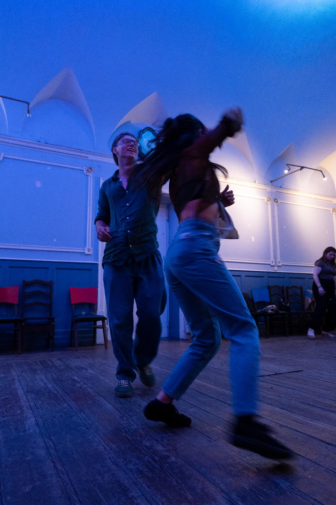

This is Portugaland
From the bottom you can only go up
Just before we start, treat yourself a drink, something good to eat and play some good music. Since we are going to Portugal Joao Gilberto or some samba might be the answer. This will be long post, I will try to put together my 2 months of volunteering and my personal journey in a readable way. It might get quite personal, take it in stride, in the end it's just words and gossip of my soul. Agora---
Get out of the country
For the whole year I was talking about traveling, hitchiking somewhere where it is hot and surfing. But I didn't know when. I wanted to work to get some money, I didn't know when do I finish school and when do I need to be in the Netherlands. Year went by and I had nothing. Even if the world went on fire, I would manage somehow, I am me. I was thinking, that one day I will pack my bags, stick out my thumb and with a handfull of luck, appear on the other side of the Europe. That was a pretty idea, but since I have instagram, I can't hide from information. Volunteering in Portugal? Just in dates that suit me? It sounded great. I finished the application, drunk, during the highschool finish march through the city. I was giving myself quite a chance to be selected, I had strong background and application from Slovakia wasn't opened till I sent them one. 10 countries, 10 people, it will be great. Deadline was close, same as the start of the volunteering. I cancelled every activity of my summer, shifted doctors, passed the interwiew (I didn't even needed to lie) and let's go volunteering.I remember I was expecting, something like erasmus although we will work. 9€ pocket money per day, meals included, 10 other people with me, it seemed too good to be true. No one who I told this wanted to believe me.
So with high hopes I finished highchool, made a proper celebration about it and then, day after big party, I took a flight to Portugal. So far so good, everything worked and I was on time. Everything, but budget. I was running a bit over it, because booking on last minute and then waiting two last minutes for confirmation from the coordinator, is not greatest financial decision in the universe.
Rock bottom
I arrived in Evora, I was tired, just wanted to sleep. My boss, president of the NGO, master of the genie, whatewer the ship between us was got me some groceries and then the realistic part started. I was the only volunteer, we were ment to be two of us but the other one got their visa cancelled. That was a blow under the ribs. He told me that the people are most content when living alone, but I knew that won't be my case.I wasn't thinking about it that night. I only got a shower and 10 hours of sleep, but the next day, the wheells started running. I got tour of the city and then no after no. I probably read the infopack wrong way or read a different one, 9€ were my pocket and food money. Throughout the week I learned that language course is online and it's complete and utter bullshit and the pool in the backyard was private and I could only watch. I bit the bullet and carried on. Made a few promises to myself and kept walking on.
I would say I was living quite independently before, but this was total independence combined with too much free time. First step was total honesty with my expenses. Looking at the chart everyday, seeing the money fading away and exceeding the budget, I dedn't feel good, but honesty rarely does. This was one of the things, I believe this two months were good for, I experienced this money honesty before moving to the Netherlands, so it won't be so much problem the second time.
My little story time
Everyone who I told, that I volunteer here asked one question, how? It was actually quite mixed, complicated and funny to explain. At first I got tasks in office. Gluing tiles, making cards, digital stuff, creating logos, spionage for facebook accounts of Evora associations and everything between. Most of them took me fragments of time and then came time to entertain myself. Learning dutch, programming and watching movies, Rick and Morty was an everyday must. The other part lasted only until July. It was the more pleasant one and I enjoyed it to be honest, helping unpacking robots in kindergarten setting up the space and taking videos, that was my task. In between I tried to communicate with the children, make them laught a bit and learned most of my Portuguese there, my first word was šiší, very useful one, I think I tried to use it also for number two like grande šiší. To sum up the work schedule, I created clips from the kindergarten videos, made workshop at primary school about Slovakia and help with summer daycamp, I, myself learned and taught one boy how to throw cards, and made masterpiece, my little drawing masterpiece.Now imagine I throw this storytime into your face in a bar or on a gauche having opening conversation. You would either fall asleep or get so lost that catching on and developing one of the ideas could be specified as olympic sport. Beside that I would rather print it on a paper and stuck in on my forehead. This way I would want to thank all the people who didn't ask me this question or asked it in interesting way which didn't took us through the Lord of the Rings triology.
Cutting down
This was the work + stuff to fill up my time and set up my job and application in Netherlands. But after the work, that was when the real business started. I have cycled everywhere everyday for 4 years, now the tables have turned. I walked everywhere, started running and playing basketball almost everyday. A few times I thought my shins are dying, or at least will get broken if I do one more hard step but luckily... Anyways, first thing I did when I came to Evora was buying a ball. Straight from the shop to the basketball court. It was different from Slovakia, very different. I am not talking now about the fact that this court was smaller than 3x3 court and we were playing 3 on 3 on two baskets. I am talking about that in Slovakia you get a court and guard it with your body, you shall not pass or enter. You need to wait your turn or push the kids out of the one that you want to play in.Here, I came, tied my shoes and I was playing. We turned and turned, I won every 1 on 1 I was playing and so on. What was same as in Slovakia, we played until the garden-guard was closing the park.
Now real fun
One week passed, I packed my bag, did magic with buses and appeared in Costa da Caparica. It was time to surf. Swell was great, my god. If I knew how to surf better I would call it surfing orgasm. Everyone who knows me a bit knows that I love surfing, although I am total shit in it. It is balance based sport and every sport that needs at leat primary school level of balance is my nightmare. I remember the time I took girl that I was dating at the time to try slackline, I've done it a few times and it was her first try, she was doing it better than me, after that we never talked again. Back to surfing. Last time we were here the wawes were great. Not too big just enough to catch some but this day. I paddled over the waves to the meeting spot, to catch some. We were here the last time surfing, I was there that day and it was not the same. I remember, I tried to catch the first one, slam, I am turning under the water trying to find the way up and when I finally get up, another wawe in my face. I understood that for this day it would be better for me to catch what remains after the real waves, I called it wave pukes. I caught some enjoyed every moment of it, in the end this was the brightest day after the first week, so...Half a day in water, monkey surf, monkey tired, monkey happy and now it's time to get back to Evora. With bola de berlim? When I am on the beach of course. I got to Almada walked around the Rio statue, Lidl, park and to the bus stop. Salt in my eyes, I think I looked like ham when it is in curing process. Just covered in salt and spices. That was a great day, on the wawes I felt finally alive. Tired, sunburnt, that is the way how a day should end.
Meet the artists
Instagram became my friend, throwing every event happening in Evora into my face. So happened this weekend, yoga sesh combined with exposition. I felt like people were nice to me because I was foreginer and they could practise their english with me. But I was most definitely intresting. Portuguese/English yoga ended and I was planning to leave, but since the exhibition started right away and I had nothing to do, I stayed. It were photographies of journey Portugal-Brusseles-Paris and migrants either from Portugal there or from there in Evora. The artists had quite a lot of connections. I stayed a bit longer, there was free food and I got myself a conversation with them, I can't say we became friends but they were very interesting and we were no longer strangers to eachother.Now to Lisbon
Another week went by and looking at my expenses I decided to go to Lisbon. Maybe it doesn't sound the most wise, but since I had packed and cooked beforehand, I was going for a cheap one. To the oriente, right across the street is the best Pastel de nata in the universe place so I took two and then some walking. I ended up at bouldering gym. Climbing until I couldn't hold on anything, it was my only time climbing in Portugal, so I had to wooooork out. Then I wanted to get some food. The restaurant was closed, so nothing,but nevermind. Beer on the way through 40 degrees park and then I cooled off at some gallery. I spent there about an hour. It was so small, but I studied every detail. Some of the pieces were wonderful but costing a fortune, 4 motto cube for 1000€ one day I will buy that. Back to reality. To the sun and hunger. I walked through the port and then spirnted to bus station as I still wasn't a friend with time shift and thought that bus is acctually leaving an hour later that it was in reality. Again, exhausted, sunburned, hugry and happy. It is really not that hard to make a person happy, it just must be something in the fridge when you get back, luckily aubegine pasta couldn't wait for me.Going overboard
I didn't like to look at my expenses, they were flagging red, so the only reasonable decision was to cut off the travel and spend two weeks at Evora only. I learned how to use garbage from shrimps, how to use every last bit of melon and other budget friendly things. I learned how to dance salsa. Open sesh to beginers man I was scared. In the end it was fine, I have met some erasmus students but they were leaving in two weeks. I remember coming back to my place after the first time and just diong the steps over and over again because I was so shiiit. Okay then some sunsets, sunsets near windmills, some running and I met the artists again! We were holding some exhibiton and suddenly they were there. I went to a little theatre with them then they instructed to go to open air cinema about a sculptor... These were my budget friendly weeks, drining cheap wine, treating myself good food and cheese as a dessert. Although I did a lot of things went to a lot of places, started watching word cup, I started to feel more lonely than I ever had.This is too much Lisbon
After this trip I will be most definitely stuck in Evora for two weeks because feira is coming. So I decided the best idea is to go to the crowded part of Lisbon. I felt anxious walking down some of the streets, I started at sabado market, walked up and down half of the city, through every park and every sightseeing spot. I think I have my way of traveling, 30 kilometers in legs, no matter how many kilos I do have on my back, just enjiying the place. In one park I have written a poem about a girl crossing by, she was the gem of the Lisbon I am sure about this. So the poem goes in that way also, but readable only in person :P.Music time!
Next days were all about baking baguettes, sicilian pizza and going to the feira with one little twist. It was first or second day of the feira and I bought tickets for a bullfight. I stand tottaly against violence on animals and this, but once in a life I need to see a bullfight. After cruising around the arena like 3 times and trying to find my seat on wrong floor the show started. Small orchestra, people who I didn't know what was their duty in this circus, everything was new. There were 3 bullfighters in total it lasted about 2 hours, they changed rounds. This was the whole cycle, but there was one thing. At the end of each act 10 men stand against the bull let them be slammed against the barrier and so to say pick up the bull. Crazy on head those motherfuckers, but they made the show. Everyone in arena shushing so the bull hears the suicidal man in front of his pack, then hang on the horns and don't let loose. Apart from one time when bull jumped over the barrier, smushed one of the garage guardins and grandma next to me holding my hand in all that fear, nothing special happened. I think I made some good photos, oh god if I brought camera from Slovakia, I could make a career out of that.Back to feira, although I was out every night, met some people I felt too lonely, I started counting the days off. This was one of the bottoms of my career. Anyways, the music was fine most of the time. Best performance was a fado one ooh god. I want a marriage there. With big bowls of pastel de nata, wine and fado in background.
A few days passed and feira was over, from that time I got only memories of eating snails, baking more baguettes and going to the prettiest cafe in Evora. This was time when also my work turned into movie marathons and I needed to get out. The way was hostel life. I booked wisely, bought the tickets, took vacation from my work and let's find some life in this world.
Hostelife
Of course it must have been tied to surfing and solotravel-ish fun. The location was Peniche, more exactly Ferrel. I packed my bags and after 3 hours in bus, I was finally on the place. Not exactly because I had quite a way to walk, but... Anyways, it was hot I had two weeks with 42 degrees. Now I had to put on my jumper right when I got off the bus. It was cloudy, maybe because peniche is kind of land which wants to cut itself off of the continent and sail into the sea. I made round tour on the cliffs, which rounded the whole place, then cut through the city because my hostel booking was approaching. I had one great idea, let's walk through the beach. Maybe I looked like an idiot but it was the best idea of that day. I had one strong urge throughout the whole walk, jump into the water, jump into it. I would be late for my but since I am in Portugal soft lateness is accepted and the booking says around 5. Strip down between the rounds I ate my baguette and all happy and salty I am walking to the hostel. It was more than I expected also shoes tied on my backpack were moving more than I expected so I came there feeling like someone was kicking me the whole way into my bumbum.After introduction to the common rooms I meet hammish. I am just getting ready for the shower when suddenly this mystic creature shows up from underneath the bed. I am a hostel virgin or I was until that moment but the conversation just started flowing and my loneliness was finally fading away.
Aftershower life
I went down to the common room, I saw some people over there before so I guessed this is my next pick, another conversation started another few names which I tried to remember and than happy hour. It was the only time when you were allowed to drink reasonably priced beer in the hostel. Conversation ended at a gyros restaurant hour or two after meeting the guys.Now when we came back drinking games started. It was bullshit, chug a beer if someone points at you. After a round me and half of the group left. We understood it is not the best idea for our wallets neither our fun. So the conversations started running. Person after person, I would say I talked almost with everybody that night. Then afterparty at beach, we are cheap and can use a walk, so we walked. 40 minutes later we are enjoying live music, drinking two for one with my English codrinker Nick and trying to trumf matcho boys to get kissed. At one point we had enough. Italian guy calling taxi, others wanting to go skinny dipping, but the outcome was just sinning in the showers getting ready for good sleep before tomorrow surfing.
How (not) to get burned
We start with breakfast, half of the people were not there, understandable after the last night and then comes the rush to pack everything choose the swimsuit and go to the beach. Feet trembling from excitement in the car. Eyes just guessing where is the best place to surf today. We ended in the most crowded spot, but we were a group. I think I was the first one in the water, high hopes and then fall. Art of falling down, if I once write a book about my life I will call it this way. I spent the whole day in the water, just to catch 3 or so. Idk what was wrong with me that day, but I was surfing, I can't say it definitely but kind of. I got two short breaks during which I played sports hoooh. When everyone left for the lunch the water was finally bit more opened. That was the best time of the day. Then walk back and waiting for the car to do the second round for us.Sitting there with other two people a conversation started, I learned that one of them is studying in Nijmegen, what an eruption of joy. This hostel is fucking magic place, guy with same birthday as me just 10 years older and a girl living 7 minutes from my future house.
I mean in these moments when you are traveling in dark and someone pulls you out of the train you instantly become friends, you open up, just joy I don't even know what I am writing about, just call it one of the greatest feelings after cold apple juice. We came back, shower then shopping, god was I hungry and cooking. The kitchen was a battlefield. I wanted to look a bit fancy make my meal as effective as possible. I used erar ingredients, whole pack of bought sausages, beans, zuchiny, it was a monstrosity on a plate. I didn't mention that, but when I came back with the groceries the happy hour was just running, so bottle of wine it is. I drank it almost whole, on empty stomach and tired mind from the whole day it made quite an attack. Then came the time to eat the monstro on the plate. It was a hill, I don't and all the people in that room don't understand to this day how I ate it. I mean when man needs to eat he eats.
Last night in bangkok
I had a small chance to go out for the air and there was a new face. Monkey see monkey must meet new face. So it was, I did my unga bunga introduction she matched my energy and that was the start. The pubquiz, I tried just to stay awake during it, talking with the girl and drinking water to wash off the effect of the wine. We won, at least I remember it that way and I helped my team the most. I think on the hostels site is the photo, I look like having heart attack combined with LSD trip. Nevermind, after the pubquiz everyone left, I asked the girl out and so we went. It was a cruising party, Walking in circles until we decided to go to the beach. Cerveja numero um pilse nummer twee, sticking fingers up the donkeys bum bum. I don't know what happpened to me but I gave up my jacket for the sake of keeping the woman warm, it was after a quite long journey but I did it after uf maybe more than a year of generous act like this one. So it happened, we had some strange kind of chemistry, while walking back I saw it in her eyes, I told myself just a good night kiss and call it a day, we are in a fucking hostel with mean lady on reception. And peaople sleeping in the dorm. So it happened, I could commit to the kiss a bit more I also should have kept the mouthguard night bracelet out of my mouth, but maybe in a next life, when we are both cats. This is how I want to end every night or start it?BTW after the mindbender I won't forget your name ever XD.
The therapy
It was strange the next morning, I felt sad that I am leaving. I exchanged contacts with some, I don't know why I did it when few of them were totally indifferent to me and with others I will never talk again, but whatever. I bought a ticket to Lisbon. On piece of cardboard box written Lisbon, persuaded Venny to join me on a hitchhiking trip and then the clock started ticking. Owners kicking us halfway out, people leaving for the surf and in all this madness guitar somehow came to my hands. I recon this as the best goodbye, the best last moments. Singing, simply enjoying life and listening to the voice of the girl, my god, I hate to listen when people sing, a lot of them, I am trying to change it, but my ears liked that voice. Buonvoyage my friends, another surfing lesson came to play and we had to go. Maybe in next life we will meet everyone once again.From now on it's me and Venny. After 2 minutes of walking I understood that I must be the navigator or we will sleep on the beach. The plan was to walk to the other town and from there catch something meaningful. Plan changed when we saw that there are no sidewalks, it changed to that we will try to catch something from here. It was the second car passing even less than a minute and to top it up it was a truck. I sticked my thumb up out of recession but he stopped. We climbed in and there started our little journey. We got ourselves to the next town, the truck driver didn't know any english but I understood that he advises us to take the bus. No one will strip us from the hitchhiking today, so we continue. We traverse the town, to a highway connection going to Lisbon and wait. It was quite funny, Venny reminded me of one of my classmates running from car to car, not getting which side of the road leads to Lisbon, but I was in a good form and when my navigator mood kicks in ooolala. Nevermind, after walk piss and unsucessfull thumbs up we are on a little crossroad hoping for the best. Caravan stops, they are going the opposite way but if we go with them there is bigger chance that we will catch it. They seemed exhausted, renting caravan and spending their last day carrying two hitchikers around. We got to Peniche. Guy didn't stop on time so we had to walk a bit. Unfortunately, there was no toilet, neither grocery shop on the way to the gas station form where we wanted to catch our ride.
This was long waiting, after declining two taxis, asking people at gas station if they stopped for us and pushing Venny's idea of taking bus further and further to the dark we got it. Eldery man stops, on front seat he has a drone and on back kid seat. We are sitting hip to hip for two hours. Ride to Lisbon takes one, but we got ride tour as a bonus. I swear, we couldn't find cooler guy, I was in Portugal for more than a month at that time but I learned everyting about Portugal from him. Food, history, culture, how does the ericeira look and where to eat seafood. Who is the greatest Portuguese poet (Pessoa first name is either Francisco or Ferdinand), he writes a poetry, his love life. It was not a moment it was quiet in the car. I think I got my expectations quite high with him. It was perfect, coldn't be better, I could brag about it a thousand words, but let's keep that for a live coversation, podcast or whatever.
We got off in the middle of the Lisbon. The good part, where you see tourists only if they get lost or scammed. Venny is hungry and all the restaurants have siesta, fuuck. She does not know what is pastel de nata and the fabrica is near, so she gets a taste. Then, after circling around trying to find normal food, we crash at burger restaurant. For me only bread soup. She got the whole package and somewhere between paycheck and last bites also a puck of snuss. Those sweedish druggos. Hope I won't ever go to sweeden because having it too near me, naah it can't happen. She must take metro to her hostel and I need to catch a bus to Evora. As a proper goodbye goes you promise eachother to meet again, one more hug and runnowalk to the places you've got to be.
During this evening nothing much happened, I was stuck in traffic for an hour at least I could sleep off the hostel, pasta was waiting at mine's, but all the way I was thinking one thing. If I was a therapist I would offer it to my patients. It goes as follows, if you are overthinking, go hitchhike, apart from that it is a dope experience, it won't let you think what if, what if I caught a different ride. No, you got from point A to B, it was how it was, you made it how it was and it was your decision.
Soooo, this is story of my first, my first proper hitchhiking esperience and when I wake up next day, I need to catch a bus at 10 because tommorow is watching the stars day.
I have seen the most dangerous animal of Portugal
I will cut off the bullshit and write this part as I say it in person.Next time I go to Portugal I need a car. Or hitchhike mate which will take me to the edge of the world. Anyways, the busses in Portugal are pain in the ass and trains are expensive. I took a bus to Mourao, village where is nothing exept a castle, grocery shop and gypsy slums. I saw everyhting. Breakfast youghurt and cookies, 3 packs of cookies were my fuel for two days. Then the castle and 30km walk. First I walked around the Mourao just to get a feel of the local culture. I got greeted by gypsies coming back from work, slept under the olive tree on the way, in a right kind of sence, I felt like a shepard. Just my flock was the backpack and a bag with blanked hanging on it. My todays endpoint is small beach at Monsaraz. Known for incredible starwatching experience. The only problem was I had to walk for the whole day. I must say I have choosen it. I could get a ride, but this is more fun and after the last weekend I needed some solitude. Nothing much happened along the way. Exept I got sunburned and one time, when I wanted to look at a small chapel and not walk too much, I climbed steep steep hill, bonus was the loot I had on my back. When it seemed I am already at the top, spiked fence appeared in front of me. I jumped over, after some problems of course. The whole theater was observing a man in a car. I don't want to know what he thinked about it, but I must say it was at least some sort of adrenaline. Then walk through the grilling sun continued. Over the bridge, to the mountain and deserved nap on viewpoint bench. I still had more than an hour of walking before me, alarm clock was a necessity. Monsaraz is a castle, with tap and drinking water uuuuu. I went in, I don't know when will I return, it's free and it seems pretty. I checked everything, in one part was a guy practising concert, the same guy was at Evora a week ago. In other was a tree with plums. Of course I took some, I was hungry, I am a bloddy student and volunteering. Recahrge 4 liters of water and let's get moving. Down the hill and there are motherfooking donkeys. It was the first and last animal which I pet in Portugal. Dogs and cats, god bless expetions, hated me. After 20 minutes of buliding endorphine reserve I needed to go. Just repeating in my head. Why didn't I bring a hammock, why. Walking into the "my camp for night" I encountered a bull, not on a leash, just a bull standing in the parking spot. I looked like a boxing bag, red bag hanging from my backpack going from one way to the other, I just grabbed it and pretended it was never there. Something I learned at the bullfight. Then to the buffet for a cerveja and cardboard. I tried my fractured, half dead Portuguese, just to understand the people working here are Spanish and my vocab of 50 words is completely useless. Somehow I got a cardboard, made a sign, my tomorrow ticket to Evora and then checked the space. From one side blows the wind, I am definitely not gonna sleep there, but on the other, it seems like a game. After knowing my surroundings it was time for a swim. It was already too cold for that sun was set, but we live only once, no? Swim, shower, journal and waiting for the miss stars. From that time the night rodeo started.
You were sleeping?
The concert is going on in the castle, reflectors shine across the night sky and I decided to call it a day after stargazing for two hours and 7 falling stars. Mother nature had different plans.After an hour or so I woke up, some soanish guys were going swimming. Everything would be okay but 10 centimeters from my face was a fox. Maybe it roleplayed a dog and wanted to make friends, but I got scared to death. After this experience, I decided to set up my sleeping a level higher. I was turning and feel kicking something in a head. Da fox, it never showed after this wonderful kick. Now, I can sleep peacefully. Bullshit. After another hour I woke up to the ringing of the trashbins. Fucking fox, it does not give itself a break. Trashbins were everywhere so it made a circle. One checkpoint was too close to me, so I shined my phone on the animal, to scare it off, it worked but I got scared off too. It was no fox, it was a boar. It started running like insane and in this wonderful syphony the watering system went on, minus another 2 hours of sleep.